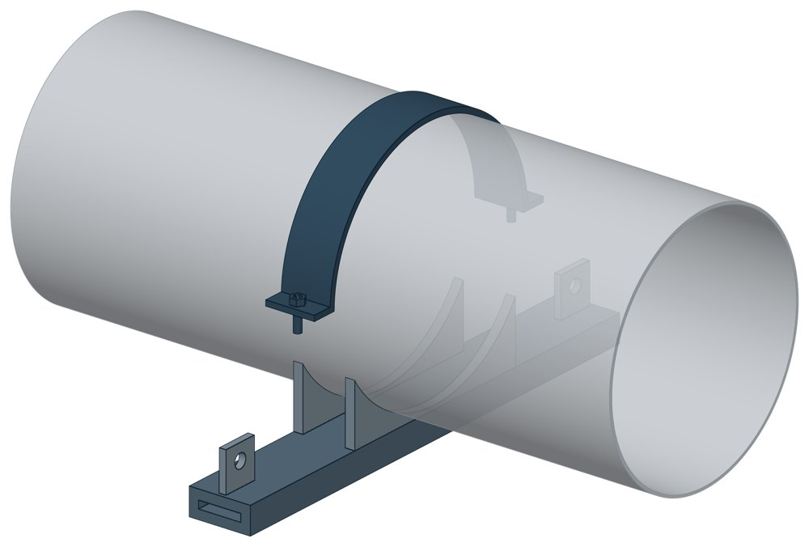

Подвески хомутовые на опорной балке с проушинами ОСТ 24-125-118-01
ОСТ 24-125-118-01. Dн 159–920 мм, масса 17,8–162,6 кг.

- Диаметр трубы Dн
- 159–920 мм
- Документ
- ОСТ 24-125-118-01
- Исполнений
- 31
- Масса
- 17,8–162,6 кг
- 3D-модели
- у всех исполнений (условные: общий вид по габаритам)
Таблица исполнений ОСТ 24-125-118-01
| Обозначение | Код ПРОМБУРГ | Dнмм | Высота подвескимм | Ширина подвескимм | Длина подвескимм | Массакг | 3D |
|---|---|---|---|---|---|---|---|
| 01 ОСТ 24.125.118 | ПБ-24118-0159-1 | 159 | 323 | 100 | 666 | 17,8 | 3D |
| 02 ОСТ 24.125.118 | ПБ-24118-0194-1 | 194 | 370 | 100 | 666 | 21,15 | 3D |
| 03 ОСТ 24.125.118 | ПБ-24118-0219-1 | 219 | 301 | 100 | 666 | 21,41 | 3D |
| 04 ОСТ 24.125.118 | ПБ-24118-0245-1 | 245 | 400 | 100 | 666 | 25,3 | 3D |
| 05 ОСТ 24.125.118 | ПБ-24118-0273-1 | 273 | 460 | 120 | 774 | 35,8 | 3D |
| 06 ОСТ 24.125.118 | ПБ-24118-0325-1 | 325 | 497 | 120 | 774 | 40,2 | 3D |
| 07 ОСТ 24.125.118 | ПБ-24118-0377-1 | 377 | 530 | 140 | 932 | 61,5 | 3D |
| 08 ОСТ 24.125.118 | ПБ-24118-0426-1 | 426 | 574 | 140 | 932 | 64,9 | 3D |
| 09 ОСТ 24.125.118 | ПБ-24118-0465-1 | 465 | 643 | 160 | 1002 | 87,6 | 3D |
| 10 ОСТ 24.125.118 | ПБ-24118-0530-1 | 530 | 640 | 160 | 1232 | 101,8 | 3D |
| 11 ОСТ 24.125.118 | ПБ-24118-0630-1 | 630 | 710 | 160 | 1232 | 125,5 | 3D |
| 12 ОСТ 24.125.118 | ПБ-24118-0720-1 | 720 | 792 | 190 | 1232 | 152,6 | 3D |
| 13 ОСТ 24.125.118 | ПБ-24118-0920-1 | 920 | 936 | 190 | 1232 | 162,6 | 3D |
| 14 ОСТ 24.125.118 | ПБ-24118-0159-2 | 159 | 302 | 100 | 666 | 17,9 | 3D |
| 15 ОСТ 24.125.118 | ПБ-24118-0194-2 | 194 | 351 | 100 | 666 | 20,4 | 3D |
| 16 ОСТ 24.125.118 | ПБ-24118-0219-2 | 219 | 367 | 100 | 666 | 20,6 | 3D |
| 17 ОСТ 24.125.118 | ПБ-24118-0245-2 | 245 | 380 | 100 | 666 | 24,3 | 3D |
| 18 ОСТ 24.125.118 | ПБ-24118-0273-2 | 273 | 440 | 120 | 774 | 34,8 | 3D |
| 19 ОСТ 24.125.118 | ПБ-24118-0325-2 | 325 | 477 | 120 | 774 | 39,1 | 3D |
| 20 ОСТ 24.125.118 | ПБ-24118-0377-2 | 377 | 510 | 140 | 932 | 59,7 | 3D |
| 21 ОСТ 24.125.118 | ПБ-24118-0426-2 | 426 | 554 | 140 | 932 | 62,9 | 3D |
| 22 ОСТ 24.125.118 | ПБ-24118-0465-2 | 465 | 623 | 160 | 1002 | 85,64 | 3D |
| 23 ОСТ 24.125.118 | ПБ-24118-0530-2 | 530 | 620 | 160 | 1232 | 99,7 | 3D |
| 24 ОСТ 24.125.118 | ПБ-24118-0630-2 | 630 | 690 | 160 | 1232 | 121,2 | 3D |
| 25 ОСТ 24.125.118 | ПБ-24118-0720-2 | 720 | 772 | 190 | 1232 | 147,9 | 3D |
| 26 ОСТ 24.125.118 | ПБ-24118-0820-1 | 820 | 848 | 190 | 1232 | 156,8 | 3D |
| 27 ОСТ 24.125.118 | ПБ-24118-0159-3 | 159 | 303 | 100 | 666 | 18,2 | 3D |
| 28 ОСТ 24.125.118 | ПБ-24118-0219-3 | 219 | 368 | 100 | 666 | 20,9 | 3D |
| 29 ОСТ 24.125.118 | ПБ-24118-0245-3 | 245 | 381 | 100 | 666 | 24,8 | 3D |
| 30 ОСТ 24.125.118 | ПБ-24118-0273-3 | 273 | 441 | 120 | 774 | 35,4 | 3D |
| 31 ОСТ 24.125.118 | ПБ-24118-0325-3 | 325 | 478 | 120 | 774 | 39,9 | 3D |
Чтобы заказать, сообщите обозначение и код ПРОМБУРГ: +7 (499) 325-51-35, promburg@yandex.ru.
Нормативные документы
- ОСТ 24.125.118-01 Подвески трубопроводов ТЭС и АЭС. Подвески хомутовые на опорной балке с проушинами. Конструкция и размеры — документ, по которому изготавливается изделие
Связанные позиции
- Соседний тип: ОСТ 24-125-119-01 — Корпус на опорной балке с проушинами (упомянут в области применения стандарта)
На трубу Dн 159–920 мм в каталоге
Позиции каталога с исполнениями на те же наружные диаметры трубы.
Детали трубопровода
- Фланец стальной воротниковый общих Dн: 11
- Фланец стальной плоский приварной общих Dн: 11
- Отвод стальной крутоизогнутый 90°, 09Г2С общих Dн: 10
- Отвод стальной крутоизогнутый 90° общих Dн: 10
- Заглушка стальная эллиптическая общих Dн: 8
- Переход стальной концентрический общих Dн: 7
- Днище стальное эллиптическое общих Dн: 6
- Отвод нержавеющий 90° общих Dн: 1
Компенсаторы
- Компенсатор сильфонный 2СКУ.ППМ (ИЯНШ) 2СКУППМИ общих Dн: 11
- Компенсатор сильфонный КСО общих Dн: 11
- Компенсатор сильфонный КСОФ общих Dн: 11
- Компенсатор сильфонный стартовый СК общих Dн: 11
- Компенсатор сильфонный СКУ.ППМ (ИЯНШ) СКУППМИ общих Dн: 11
- Компенсатор сильфонный 2ОПКР общих Dн: 10
- Компенсатор сильфонный 2ОПКР (ИЯНШ) 2ОПКРИ общих Dн: 10
- Компенсатор сильфонный 2СКУ.М 2СКУМ общих Dн: 10
- Компенсатор сильфонный 2СКУ.М (ИЯНШ) 2СКУМИ общих Dн: 10
- Компенсатор сильфонный 2СКУ.ППУ (ИЯНШ) 2СКУППУИ общих Dн: 10
- Компенсатор сильфонный 2СКУ.ППУ/ОЦ (ИЯНШ) 2СКУППУОЦИ общих Dн: 10
- Компенсатор сильфонный КС общих Dн: 10
- Компенсатор сильфонный КСО (ИЯНШ) КСОИ общих Dн: 10
- Компенсатор сильфонный ОПКР общих Dн: 10
И ещё 20 типов — в оглавлении каталога.
Другие опоры и подвески
- Блок хомутовый ОСТ 24-125-113-01 общих Dн: 14
- Полухомуты для хомутовых блоков подвесок горизонтальных трубопроводов из хромо молибден о ванадиевых сталей ОСТ 24-125-114-01 общих Dн: 14
- Корпус на опорной балке с проушинами ОСТ 24-125-119-01 общих Dн: 14
- Полухомут для хомутовых опор ОСТ 24-125-120-01 общих Dн: 14
- Балки опорные с проушинами ОСТ 24-125-121-01 общих Dн: 14
- Подвески пружинные хомутовые на опорной балке ОСТ 24-125-122-01 общих Dн: 14
- Корпус на опорной балке для пружин ОСТ 24-125-123-01 общих Dн: 14
- Балки опорные для пружин ОСТ 24-125-124-01 общих Dн: 14
- Опоры приварные неподвижные скользящие ОПН общих Dн: 13
- Опора скользящая хомутовая ТС-626 общих Dн: 12
И ещё 94 типа — в оглавлении каталога.
Другие типы раздела
Подвески и пружинные блоки по ОСТ 24.125.111…125
- Блок пружинный подвесной ОСТ 24-125-111-01
- Опорные пружинные блоки ОСТ 24-125-112-01
- Блок хомутовый ОСТ 24-125-113-01
- Полухомуты для хомутовых блоков подвесок горизонтальных трубопроводов из хромо молибден о ванадиевых сталей ОСТ 24-125-114-01
- Блоки хомутовые с траверсой ОСТ 24-125-116-01
- Хомуты сварные ОСТ 24-125-117-01
- Корпус на опорной балке с проушинами ОСТ 24-125-119-01
- Полухомут для хомутовых опор ОСТ 24-125-120-01
- Балки опорные с проушинами ОСТ 24-125-121-01
- Подвески пружинные хомутовые на опорной балке ОСТ 24-125-122-01
- Корпус на опорной балке для пружин ОСТ 24-125-123-01
- Балки опорные для пружин ОСТ 24-125-124-01
- Подвески приварные на опорной балке с проушинами ОСТ 24-125-125-01
Частые вопросы
По какому диаметру подбирать — Dн или Ду?
По наружному диаметру трубы Dн: именно он стоит в таблицах серии. Ду — условный проход, округлённая величина: Ду 100 соответствует Dн 108. В заявке указывайте Dн и толщину стенки трубы.
В старом проекте нагрузка в тс, а здесь в кН. Как сравнить?
Серия 4.903-10 даёт нагрузки в тонна-силах, серия 5.903-13 — в килоньютонах. 1 тс = 9,81 кН, то есть 10 тс — это около 98 кН. В таблицах каталога переключатель единиц пересчитывает значения.
Из какой стали изготавливаются опоры?
По рабочим чертежам серии листовые детали — Ст3сп5 ГОСТ 14637-89, хомуты из круга — сталь 20 ГОСТ 1050-88. Для районов с низкой расчётной температурой воздуха применяется низколегированная сталь, в том числе 09Г2С; размеры опор при этом не меняются. В заявке укажите расчётную температуру наружного воздуха.
Почему часть поверхностей опоры не окрашена?
Поверхности под приварку к трубе и к несущей конструкции оставляют без краски, иначе шов получится некачественным. Их консервируют смазкой, которую снимают перед сваркой.
Что указать в заявке, чтобы получить цену без уточнений?
Обозначение с номером исполнения или код ПБ, количество, Dн и стенку трубы, расчётную температуру наружного воздуха, покрытие, город доставки и желаемый срок. Кнопка «В заявку» в таблице собирает спецификацию, которую можно выгрузить в Excel или отправить письмом.